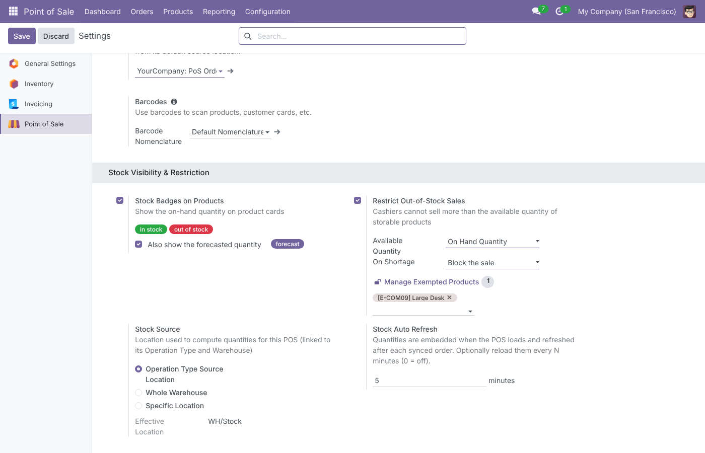
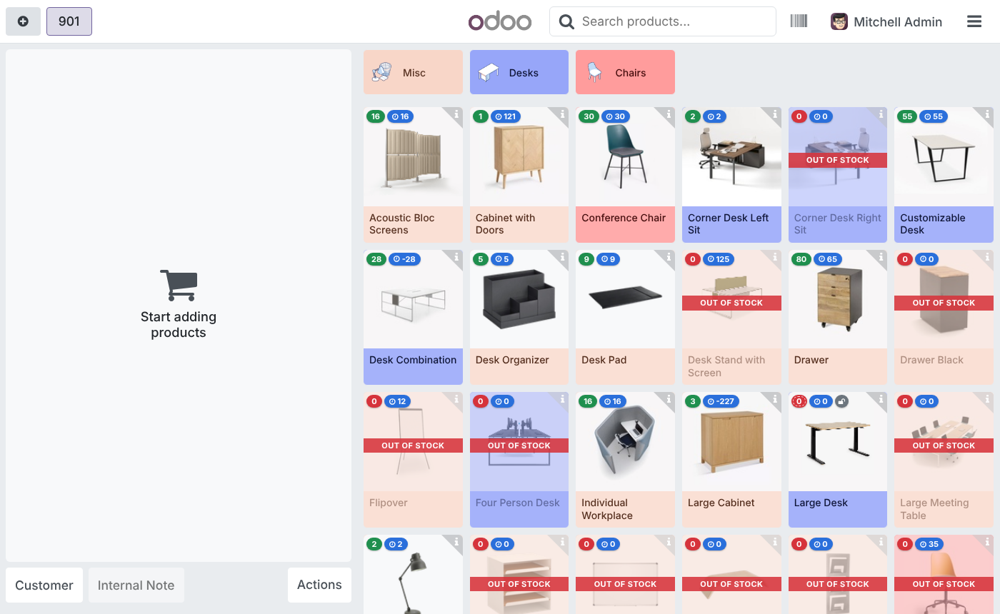
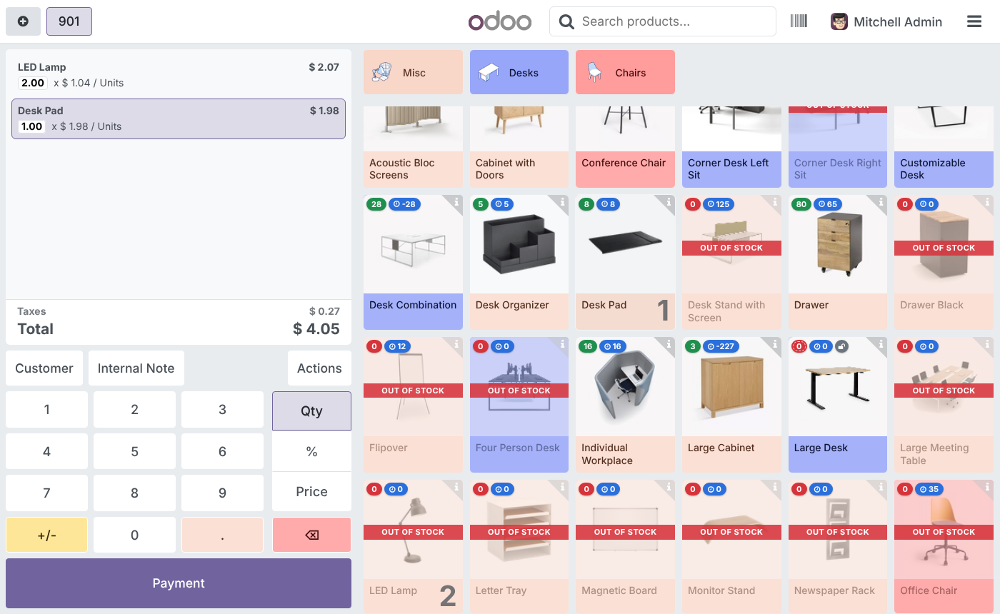
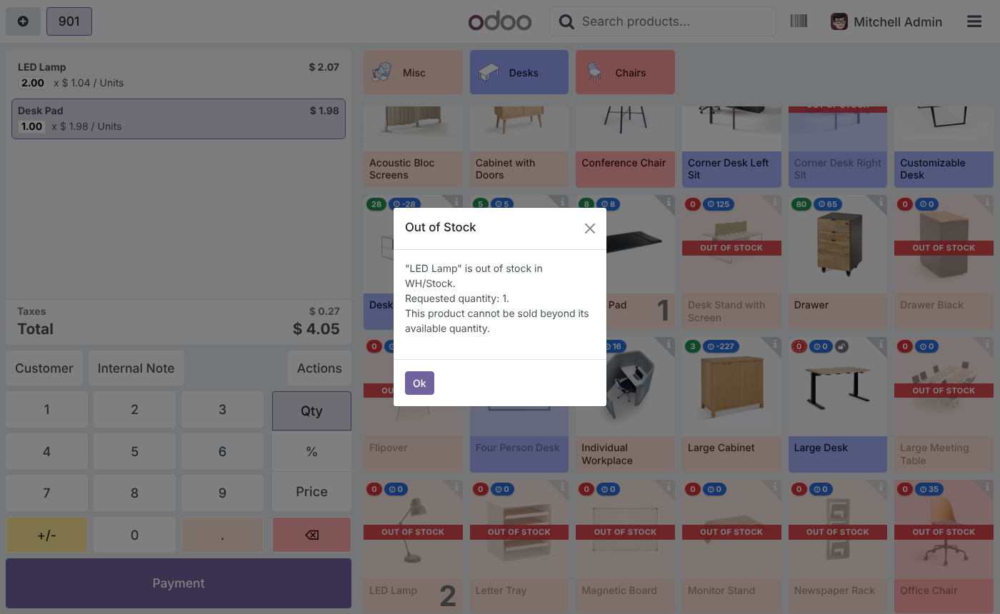
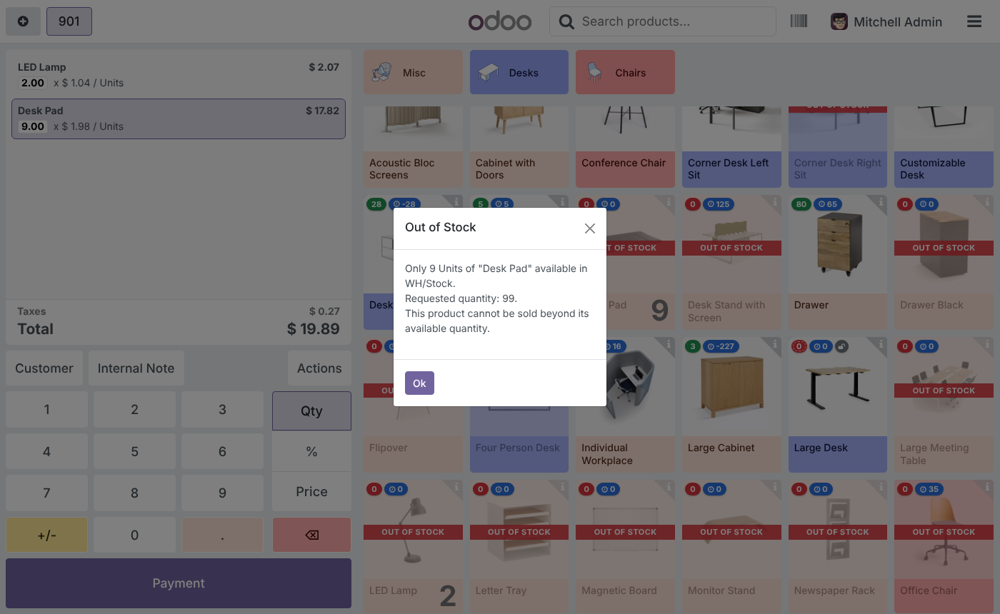
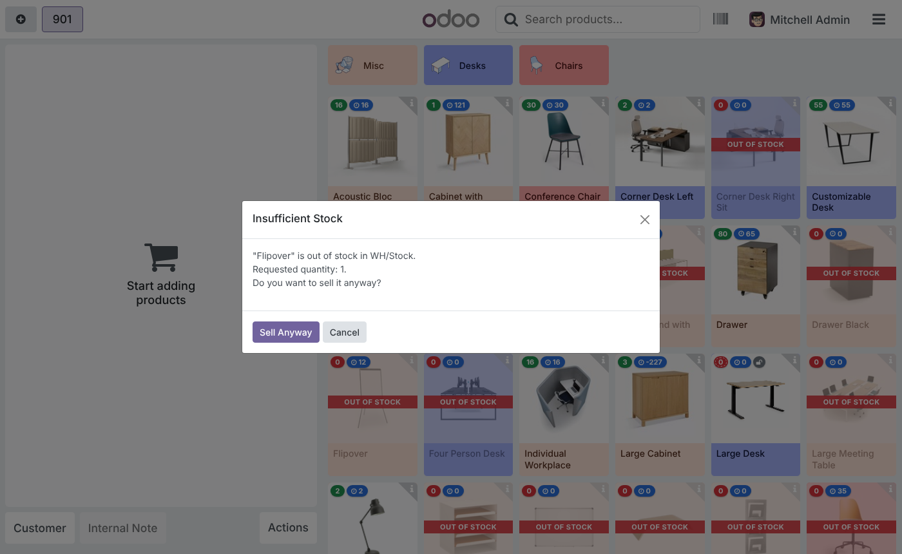
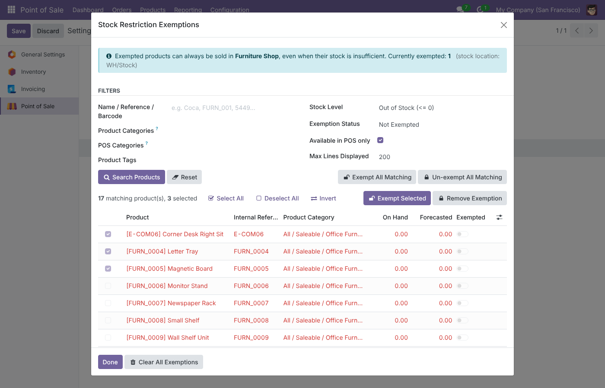
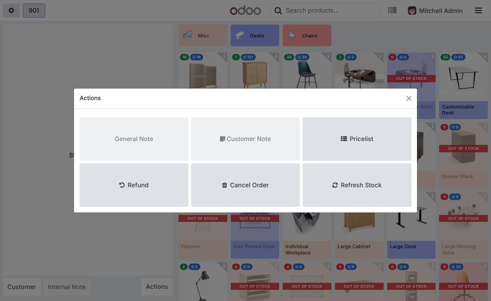
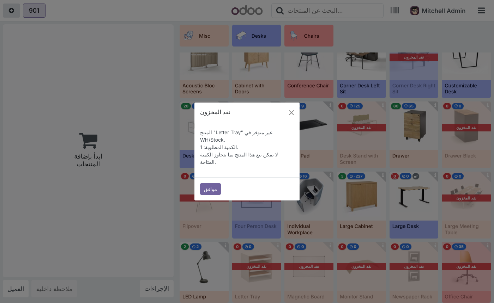

Cashiers see the real stock of every product right on the POS screen, and each terminal can stop (or warn about) sales beyond the available quantity. Settings, stock location and exempted products are configured per Point of Sale.
The Odoo 18 Point of Sale sells whatever the cashier clicks. This module brings the stock to the cashier and lets each shop decide how strict to be.
Four steps, all from the settings of the Point of Sale you choose.
Screenshots use the Odoo 18 demo database (furniture products, Furniture Shop POS on WH/Stock) with the restriction on, the forecast badge on and Large Desk exempted.
No new menu to learn. The module adds a Stock Visibility & Restriction section to Point of Sale › Configuration › Settings (below Inventory) and to the POS form. Values are saved on the shop selected in the Point of Sale field at the top, so another shop keeps its own rules. Manage Exempted Products opens the exemption tool; the badge next to it shows how many products are exempted.

With Stock Badges on Products, each product with Track Inventory enabled shows, in its top-left corner, its on-hand quantity in green (in stock) or red (zero or negative). Also show the forecasted quantity adds a blue badge with incoming and outgoing moves included. When the restriction applies and nothing is left, the card is dimmed with an OUT OF STOCK strip. Exempted products get a grey unlock badge. Consumables and services stay untouched.

Quantities already in the cart, in other open orders of the terminal and in paid orders waiting to sync are deducted instantly. Here 2 LED Lamp were added: its badge went from 2 to 0 and the card turned red; Desk Pad dropped from 9 to 8.

In Block the sale mode the product is not added and an Out of Stock popup names the product, the location and the quantity asked. The rule is checked on product clicks, barcode scans, merged lines and quantity typed on the numpad, then once more on Validate in the payment screen.


With Warn and allow override, an Insufficient Stock popup asks for confirmation. Cancel keeps the order unchanged, Sell Anyway adds the product and the badge goes negative. Choose Available Quantity Based On: On Hand Quantity or Forecasted Quantity.

Manage Exempted Products filters by Name / Reference / Barcode, Product Categories and POS Categories (children included; a product with several POS categories matches if any of them does), Product Tags, Stock Level (out of stock, negative, in stock) and Exemption Status. Lines show on-hand and forecast for this POS location. Use Select All, Invert, Exempt Selected / Remove Exemption, or Exempt All Matching to cover every result even beyond Max Lines Displayed.

After each synced order only the products just sold are reloaded, in background. Auto Refresh (minutes) reloads everything periodically, and the cashier can force it any time with Actions › Refresh Stock.

Settings, exemption tool, popups, the OUT OF STOCK strip and the Refresh Stock button are translated (i18n/ar_001.po). Popup lines are kept on separate lines so mixed Arabic and Latin product names stay readable.

Compute Stock From decides which location (children included) is read. The Effective Location field shows the result.
| Option | Location used | Typical use |
|---|---|---|
| Operation Type Source Location | Default source location of the POS Operation Type | Shop floor stock, the location POS orders are taken from |
| Whole Warehouse | Every internal location of the chosen warehouse | Back room and shelves count together |
| Specific Location | A location you pick | Kiosk or counter with its own stock |
Each case below is covered by the code and most by automated tests.
The module uses the standard Point of Sale groups.
| Who | Can |
|---|---|
| Point of Sale / User | See the badges and receive the restriction; refresh quantities of their own session, read for the POS location only, without needing Inventory access. |
| Point of Sale / Administrator | Change the settings and use Manage Exempted Products. |
| Multi-company | Quantities are computed in the company of the POS; the exemption tool only lists products of that company or shared ones. |
| Odoo version | 18.0, Community and Enterprise |
| Depends on | point_of_sale |
| Python dependency | None |
| Settings | Point of Sale › Configuration › Settings › Stock Visibility & Restriction (also on the POS form) |
| Models | Fields added to pos.config; POS loaders on pos.config and product.product (_load_pos_data); transient prsq.exemption.wizard and prsq.exemption.wizard.line |
| POS data loading | Settings and stock map travel with the POS data (pos.config keys _prsq_settings / _prsq_stock_map); products found later by search, barcode or the local cache are fetched once in background through pos.session.prsq_get_stock_map |
| Automated tests | 26: 24 Python tests (location scopes, operation type mapping, forecast, closing vs real-time stock, multi-terminal sales, payload, cashier access, constraints, per-POS settings, every exemption filter including multi POS categories, bulk actions) and 2 UI tours (Block and Warn modes) run as a POS user without Inventory rights |
| Languages | English, Arabic (ar_001) |
| License | LGPL-3 |
Questions, a demo, or an adaptation to your own process? Get in touch.
✉ ibrahim.yahiah@gmail.com LinkedIn: Ibrahim YahiaAuthor: Ibrahim Yahia · License: LGPL-3